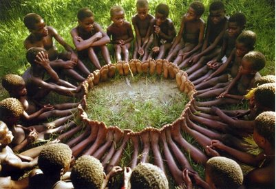

A jornalista e filósofa Lia Diskin, no Festival Mundial da Paz, em Florianópolis (2006), presenteou-nos com o caso da tribo africana Ubuntu. Contou que um antropólogo estava estudando os usos e costumes da tribo e, quando terminou seu trabalho, teve de esperar pelo transporte que o levaria até o aeroporto de volta para casa. Sobrava muito tempo; então, propôs para as crianças uma brincadeira, que parecia inofensiva.
Comprou uma porção de doces e guloseimas na cidade; botou tudo num cesto bem bonito com laço de fita e colocou debaixo de uma árvore. Chamou as crianças e combinou que, quando ele dissesse "já!", elas deveriam sair correndo até o cesto e a que chegasse primeiro ganharia todos os doces que estavam dentro dele.
As crianças posicionaram-se na linha demarcatória que ele havia desenhado no chão e esperaram pelo sinal combinado. Quando ele disse "já!", instantaneamente, todas deram-se as mãos e saíram correndo em direção à árvore. Chegando lá, começaram a distribuir os doces entre si e os comeram felizes.
O antropólogo foi ao encontro delas e perguntou por que tinham ido todas juntas, se uma só poderia ficar com tudo que havia no cesto e, assim, ganhar muito mais doces.
Elas simplesmente responderam:
- Ubuntu, tio. Como uma de nós poderia ficar feliz, se todas as outras estivessem tristes?
Ele ficou desconcertado! Meses e meses trabalhando nisso, estudando a tribo, e ainda não havia compreendido, de verdade, a essência daquele povo; ou jamais teria proposto uma competição...
Ubuntu significa: "Sou quem sou, porque somos todos nós!”